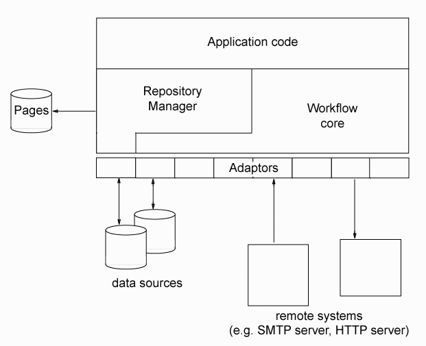

wftk: Overview[ documentation home ] |
The wftk system itself is broken into two major segments of code, the repository manager (repmgr), which manages the data objects in the system, and the wftk core engine, which manages the purely workflow aspects of system operation, including the interpretation of process definitions. Each of these major modules interacts with external systems by calling functions grouped into adaptors, which can be seen as software drivers. Many adaptors are shared between the two major modules, while others have meaning only in one context or the other.
| Warning: This document describes the goal state of wftk. For version 1.0, only the core workflow engine is included, in a "wftk-bare" mode. The repository manager and core engine have not yet been integrated as shown in the diagram below; this will be happening during July 2002 or I'm just going to shoot myself. (Current note: this integration didn't happen in 2002, but it's largely finished.) After release of wftk core v1.0, I'll be releasing repmgr v1.0. Subsequent integration work will probably be released as wftk v1.5. |
 Application code interacts with wftk using either the repmgr API or the wftk core API; however, since the repository manager itself knows how to invoke the wftk API in response to various events, a workflow-oriented system may have no need at all to invoke the wftk core API directly. For applications which want to do pure workflow without the overhead of repository management, the wftk core is carefully independent of the repmgr. The "wftk core" is in fact the version-1.0 distribution of the wftk; at present the repmgr is only available via the CVS repository.
The repository manager adds a great deal of logic for formatting text and building Websites; this code can also be used to maintain other "unstructured" text using the structured data sources making up a repository. There is code derived from the Wiki Wiki Web paradigm which allows plain text to be processed into a formatted layout, enabling content producers to ignore formatting completely in many cases while writing, but still preserving their ability to affect formatting explicitly when they need to.
For more information on the workflow aspect of the wftk, see the workflow backgrounder; it's got a fairly good presentation of what workflow is and what it can do for you. The beginnings of a new set of application examples are in the wftk application section. There, it should soon be more apparent what wftk really is, and note that many of these examples are really repository-manager examples.
There aren't many examples of application code yet, besides the command-line utilities wrapped around
the repmgr and the wftk core. There is a popup window framework coming up which talks to the
repository manager, and there are the Python wrappers for embedding repmgr and the XMLAPI into Python
programs (a nice combination with Zope or wxWindows). There will be more. For a list of the
things I'm working on right now in wftk, see the to-do list. For a list of
all the things that are working or in process, see the code overview.